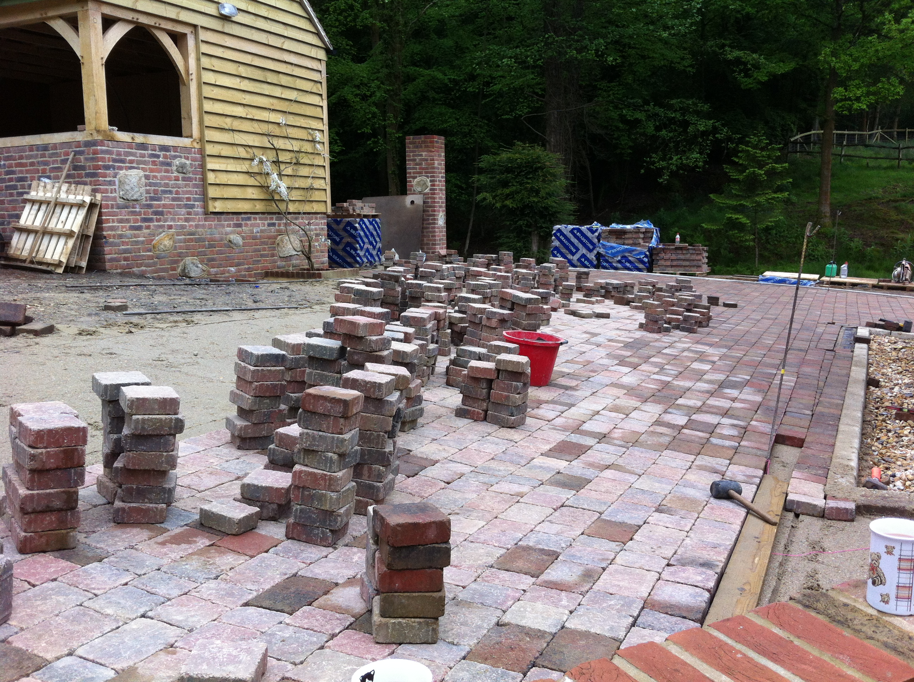

Home | CJM Driveways

Home
Infomation
Our Services
Testimonials
Contact Us
C.J.M. Driveways are specialists in all aspects of Block Paving, Natural Stone and Tarmac for Patios, Drives, Paths, Roads and Car Parks and are based in Horley working in and around the whole of Crawley and Horsham, Reigate, Redhill, Dorking, Caterham and East Grinstead areas, don’t worry if you a bit further afield give us a call.
Our services include All Groundwork, Pipe work and Fencing requirements, offering vintage, traditional and contemporary styles of paving to your requirements.
We offer a full design service for patios and drives and are happy for you to view any work which we have previously carried out in your local area.

We are Local Authority Approved and work for both Domestic and Commercial customers.
We are Bradstone Approved Installers .
All our work is guaranteed for 10 years and we have full public liability insurance.
We cover the heart of Sussex and Surrey reaching into Kent and the south of London, here is a map of the main are we cover but don’t worry if your a bit outside this give us a call and we’ll discuss what you need doing.
Contact Delatils


 Contact Delatils
Contact Delatils